resumen* del menú inteligente. Una vez seleccionada este campo, se debe agregar al cuadro de edición la linea de texto resumen: (ver figura S3.1.1-3) y debe desaparecer del menú inteligente el campo resumen*. (ver figura S3.1.1-4) Este campo es obligatoria agregar.
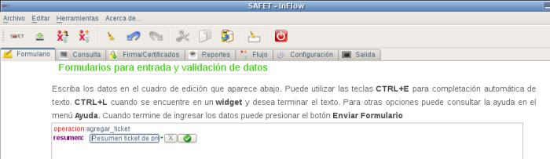
resumen*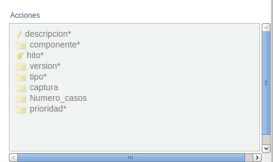
resumen*Una vez que ingresa un texto valido para el resumen del ticket se le da click al botón
Si quiere eliminar el campo resumen: se le da click al botón
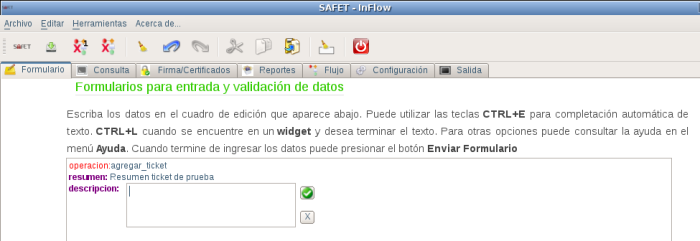
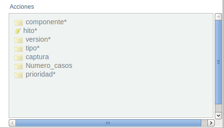
Una vez que ingresa el descripción del ticket se le da click al botón 
si quiere eliminar la campo descripcion* se le da click al botón
componente* del menú inteligente, una vez seleccionada este campo, se debe agregar al cuadro de edición la linea de texto componente: y un botón de selección (ver figura S3.1.1-7) y debe desaparecer del menú inteligente la campo componente*. (ver figura S3.1.1-8) Este campo es obligatoria agregar.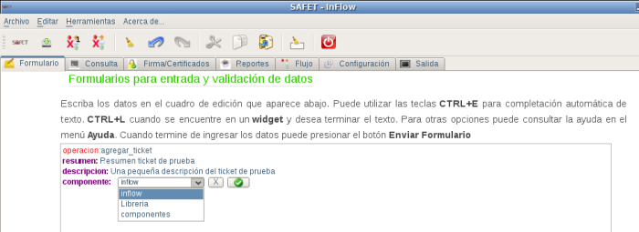
componente*, botón de selección.safet.log para tener mayor información sobre el posible error.
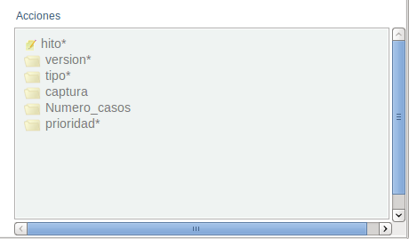
Una vez que selecciona la opción del componente del ticket se le da click al botón 
Si quiere eliminar la campo componente* se le da click al botón
hito* del menú inteligente, una vez seleccionada este campo, se debe agregar al cuadro de edición la linea de texto hito: y un botón de selección (ver figura S3.1.1-9), debe desaparecer del menú inteligente componente*. (ver figura S3.1.1-10) Este campo es obligatoria agregar.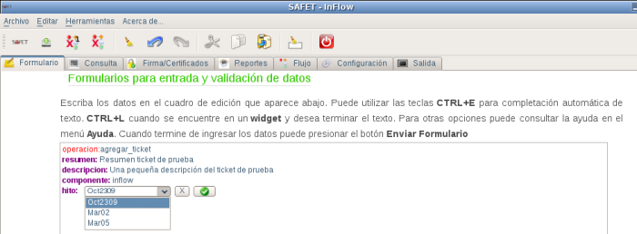
hito*, botón de selección.
Nota importante: Si al pulsar el botón de selección no aparece ninguna opción, es probable que existe un error de conexión a la base de datos. En este caso se recomienda revisar archivo safet.log para tener mayor información sobre el posible error.
Una vez que selecciona la opción del hito del ticket se le da click al botón 
Si quiere eliminar el campo hito* se le da click al botón
version* del menú inteligente, una vez seleccionada este campo, se debe agregar al cuadro de edición la linea de texto version: y un botón de selección (ver figura S3.1.1-11) debe desaparecer del menú inteligente el campo version* (ver figura S3.1.1-12). Este campo es obligatoria agregar.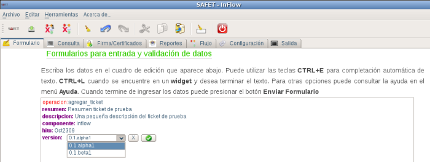
version*, botón de selección.Nota importante: Si al pulsar el botón de selección no aparece ninguna opción, es probable que existe un error de conexión a la base de datos. En este caso se recomienda revisar archivo
safet.log para tener mayor información sobre el posible error.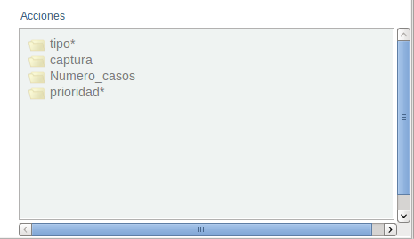
version*Una vez que selecciona la versión del ticket se le da click al botón 
Si quiere eliminar el campo version* se le da click al botón
tipo* del menú inteligente, una vez seleccionada este campo, se debe agregar al cuadro de edición la linea de texto tipo: y un botón de selección (ver figura S3.1.1-13) y debe desaparecer del menú inteligente el campo tipo*. (ver figura S3.1.1-14) Este campo es obligatoria agregar.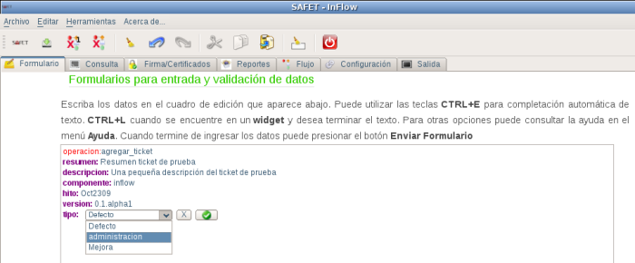
tipo*, botón de selección.Nota importante: Si al pulsar el botón de selección no aparece ninguna opción, es probable que existe un error de conexión a la base de datos. En este caso se recomienda revisar archivo
safet.log para tener mayor información sobre el posible error.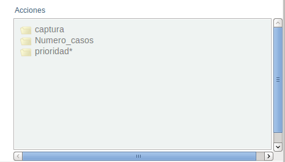
tipo*Una vez que selecciona la opción del tipo del ticket se le da click al botón
Si quiere eliminar el campo
tipo* se le da click al botón priorida* del menú inteligente, una vez seleccionada este campo, se debe agregar al cuadro de edición la linea de texto priorida: y un botón de selección (ver figura S3.1.1-15) y debe desaparecer del menú inteligente el campo priorida*. (ver figura S3.1.1-16) Este campo es obligatoria agregar.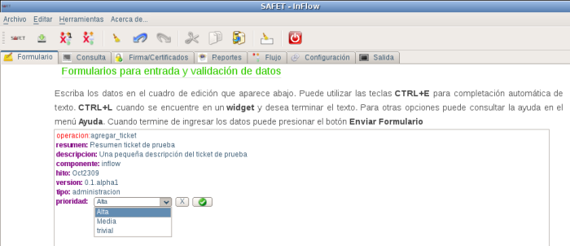
prioridad*, botón de selección.Nota importante: Si al pulsar el botón de selección no aparece ninguna opción, es probable que existe un error de conexión a la base de datos. En este caso se recomienda revisar archivo
safet.log para tener mayor información sobre el posible error.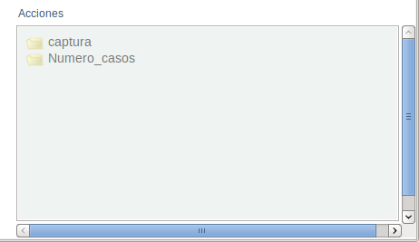
prioridad*Al ingresar todos los campos requeridos ( * ) se presiona a cualquiera de los dos botones de Enviar
Luego de hacer click en el botón Enviar, se muestra en un cuadro de información que aparece en la parte inferior derecha si la operación fue exitosa (ver figura S3.1.1-17)
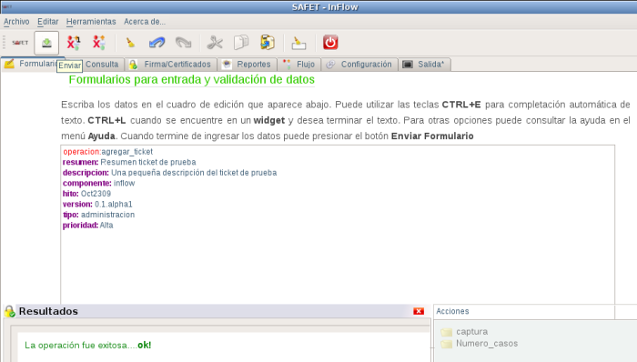
dbtracsafet con pgadmin3 para verificar que realmente se agrego un nuevo ticket(ver figura S3.1.1-18)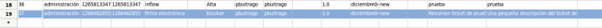
dbtracsafet, nuevo ticket ingresado con inflow